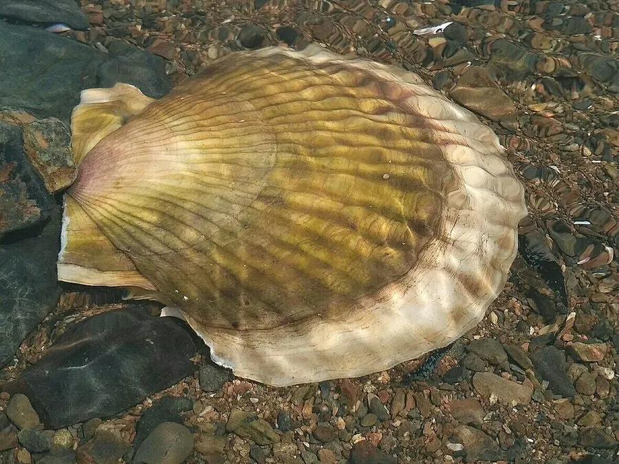

软体动物 · 动物界
虾夷扇贝 Patinopecten yessoensis

壳面有放射肋、右壳平左壳凸的大型扇贝，原产日本北海道与俄罗斯远东，是中国北方重要养殖贝。
- 分类
- 门软体动物门纲双壳纲目海扇蛤目科扇贝科属盘扇贝属
- 栖息环境
- 水温较低的沙泥底质浅海与养殖筏架
- 地理分布
- 原产日本北海道、本州北部与俄罗斯远东，中国辽宁、山东养殖
- 保护级别
- 重要养殖贝类，野生种群在原产地受捕捞管理
物种志
虾夷扇贝的壳高可达十至十五厘米，壳形圆扇形，两壳不等，右壳较平，左壳较凸，壳面有二十余条粗大的放射肋，肋上有鳞片状突起。壳色紫褐至灰白，壳内面白色带珍珠光泽。足部退化，靠闭壳肌快速开合两壳排水游泳，闭壳肌肥大，是食用的主要部分，干制后即为干贝。
它原产日本北海道、本州北部和俄罗斯远东沿海，栖息在水温较低的沙泥底质浅海，以滤食浮游藻类为生。二十世纪八十年代引入中国，在辽宁、山东等地大规模养殖，成为中国北方重要的海水养殖贝类。它生长较慢，对水温敏感，夏季高温会造成大面积死亡，养殖需要掌握水温与密度，并防范赤潮和病害。
形态与习性
- 壳高可达十至十五厘米，圆扇形
- 两壳右壳平、左壳凸，具二十余条放射肋
- 运动开合两壳排水，可短距离游泳
- 食性滤食浮游藻类
- 养殖中国北方大规模筏式养殖
- 风险夏季高温可致大面积死亡
趣味知识
- 它靠猛地合壳把水喷出去，借反作用力在水里蹦着逃命。
- 那块圆柱形的大肌肉就是干贝的原料，晒干后鲜味浓缩。
- 它怕热，夏天水温一高，养殖筏上就会成片死亡。